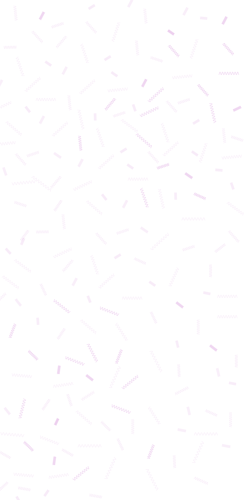

Este proyecto a gran escala creado para el ingreso del Museo Moderno constituye la puerta de entrada al programa de exposiciones 2022, Un día en la tierra. Con Órbita cromática, Cristina Schiavi expande su participación en la exposición Vida abstracta, ubicada en el primer piso del museo. La producción de Schiavi se desarrolla, desde finales de...
Para El lugar del alma, Morelos se inspiró en la colección de arte concreto del Museo Moderno –cuyas obras pueden verse en la exposición “Vida abstracta”– al llevar una composición abstracta a escala humana, y luego suspenderla. Asimismo, la artista entiende esta obra como una evocación de los rituales de la Argentina andina.

Una enredadera brota de las paredes y rodea todo el espacio ante la presencia de criaturas amigables. Un nuevo paisaje, extraño y dulce a la vez, sugiere un presente gobernado por la naturaleza y lo desconocido. En un momento extraordinario como el actual, Cotelito crea esta fábula alienígena con un clima lleno de júbilo y picardía.
El límite es una exposición de obras del patrimonio del Museo Moderno en diálogo con obras de artistas invitados, que inaugura el programa de exposiciones 2022 Un día en la Tierra. Este programa despliega un discurso holístico dedicado a la necesaria y urgente reflexión sobre el presente de la humanidad y su relación con el planeta.
Desde hace más de cuatro décadas, Mónica Giron (San Carlos de Bariloche, 1959) ensaya distintos modelos para lidiar tanto con la violencia interna, la social y la que le infligimos al planeta como con el amor, la soledad, las fuerzas desconocidas y lo incuantificable.
El imaginario del arte abstracto resuena aún hoy en las diferentes esferas públicas y privadas. Sus ideas subyacentes, sus indagaciones técnicas y experimentales traspasaron los límites de las artes visuales y se arraigaron tanto en el arte como en la vida cotidiana..
Desde 1992, Florencia Bohtlingk se traslada cada año a la colonia La Flor para metabolizarse en las entrañas de la selva misionera. Allí fue siguiendo el movimiento de colonos de diversas nacionalidades; los cuerpos humanos que llegan desde el interior de la selva para asentarse en nuevas zonas del mismo suelo. La boca del Infierno (2019) es el testimonio pictórico de ese movimiento, una obra que nos enseña que en la frondosidad del monte absolutamente todo es vida y que toda esa vida está inmersa en un mismo movimiento. Cada ser gira en torno de otro, como la danza de un único cuerpo compuesto por miles de organismos. Dentro de ese complejo ecosistema, la oleada trashumante tiene el color rojo de la tierra, adopta la forma serpenteante del río o se mezcla con las familias de cotorras, monos y plantas. Al entrar en el enmarañado verde del monte, donde todo se superpone y se entrecruza, no existen jerarquías entre la figura y el fondo, solo escalas a partir de las que es posible hacer foco. La inmensa pintura nos advierte que la selva no se mira desde afuera, sino que se experimenta desde adentro, con un cuerpo que es parte de otro cuerpo mayor, cambiante y formado por órganos interdependientes: a veces demasiado abstracto, a veces confuso, por momentos en alta definición y por otros, nuevamente camuflado.
El arte ha tenido siempre la capacidad de transformar materiales y objetos en piezas destinadas a la admiración, al estudio y a la contemplación. Alberto Greco fue un artista que abandonó esa tradición y abrió un nuevo espacio de observación de la realidad a través de marcas, signos y señalamientos. Así extendió tanto los límites disciplinares del arte como el arte mismo. La apertura de su primera gran exposición producida en la Argentina, Alberto Greco: ¡Qué grande sos!, nos convoca a reactivar la aventura de un arte vivo. En el mes de abril, el Museo Moderno invita a participar de La aventura de lo real, y vivenciar las palabras iniciales del Manifiesto Vivo-Dito del Arte-Vivo con el que Greco empapeló las calles de Roma en 1962: “El arte vivo es la aventura de lo real. El artista enseñará a ver no con el cuadro sino con el dedo. Enseñará a ver nuevamente aquello que sucede en la calle”. El arte del vivo-dito (en italiano, dito significa dedo) es una acción en la que, a través de señalar, encerrar con un círculo de tiza o firmar convierte objetos, personas o situaciones de la vida cotidiana en obras de arte efímeras y espontáneas. Greco propone tomar aquello que nos rodea como una experiencia artística que renueva nuestro vínculo con el mundo. Esto nos recuerda que la cultura no da nunca sentidos totalmente transparentes, estables o cerrados, sino móviles y cambiantes. Con esta motivación, las señales de Greco transforman lo aprendido en el arte y se expanden con acciones concretas que desde el Museo proponemos desplegar en sus diferentes dimensiones. Convocamos a un conjunto de artistas a recuperar el vivo-dito como gesto radical y a señalar lo que acontece hoy: las marcas contemporáneas de lo cotidiano, el pulso de las diferentes ciudades del país, los objetos familiares que nos rodean. El vivo-dito es siempre una acción contemporánea y se enciende con la fuerza del presente. Esta premisa nos impulsa, entonces, a ampliar la invitación para que los señalamientos sean adoptados también por la comunidad, haciendo que fotografías, videos, voces y gestos conformen una imagen coral de la complejidad del presente. Mientras que esta convocatoria es impulsada desde #MuseoModernoEnCasa, localizada en las diferentes redes sociales del museo, proponemos que otra acción nos reúna desde la escritura, las huellas, los gestos y el dibujo. El departamento de Educación del Museo Moderno invita a recrear el Manifiesto rollo vivo-dito, una obra que Greco realizó en Piedralaves (España) con un rollo de papel de 300 metros de largo por 10 centímetros de ancho. Este rollo fue el soporte de firmas, dibujos, collages y escrituras de la comunidad de aquel pueblo, principalmente de niños y niñas que se acercaron a dejar su marca, y materializar así una suerte de cadáver exquisito gráfico. Pondremos en circulación un nuevo rollo para ser intervenido por distintas comunidades de la ciudad y del país, y exhibido como una acción colectiva y actual.
En el contexto de la pandemia, las fronteras geográficas externas e internas se cerraron, pero paradójicamente se abrieron posibilidades de consolidar herramientas de enlace y vías de comunicación entre los distintos territorios de nuestro país. A partir de esta coyuntura de desconexión física, se estrecharon, en cambio, los lazos en la red de escenarios culturales argentinos. En tal sentido, es una nueva oportunidad para volver a cuestionar la centralidad de Buenos Aires como nudo de la madeja cultural de nuestro país con la idea de dibujar un mapa artístico más amplio con distintos focos de relevancia. En las últimas tres décadas, los centros artísticos regionales (condenados a ocupar la periferia territorial de la periferia continental de Sudamérica) promovieron investigaciones, prácticas artísticas y modalidades de gestión cultural que son esenciales para narrar las historias del arte argentino en toda su diversidad. Estas historias están plasmadas en los espacios de formación, tales como las históricas universidades públicas, las escuelas de arte provinciales o municipales y los talleres coordinados por artistas; notables espacios de exhibición como museos públicos y galerías, y los proyectos autogestionados que fueron siempre el bastión de avanzada de lo contemporáneo y que, con más de dos décadas de vida, han construido comunidades artísticas que irradian poéticas y fuerzas críticas que las distinguen unas de otras.